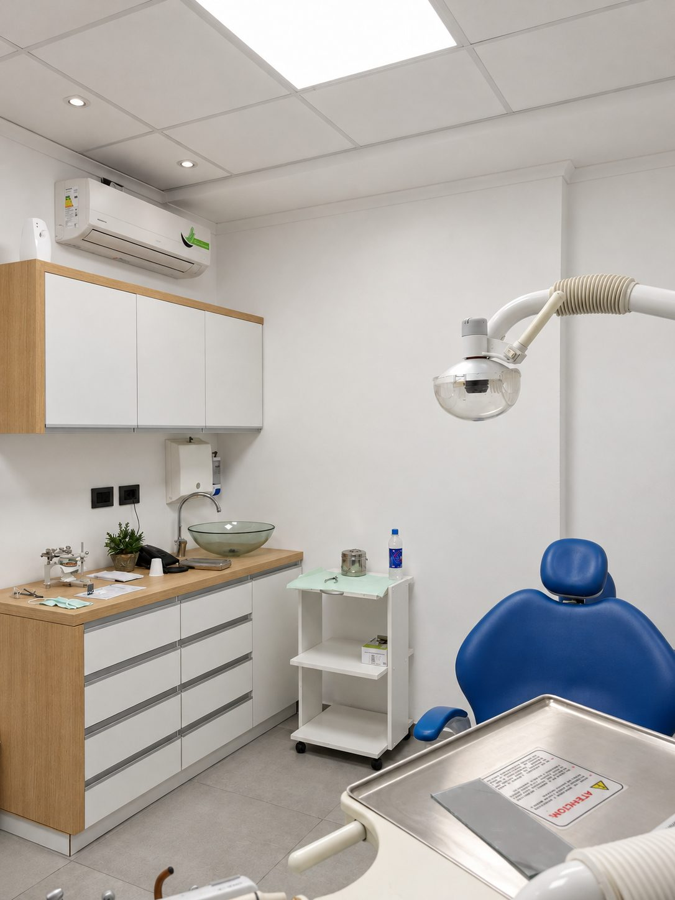
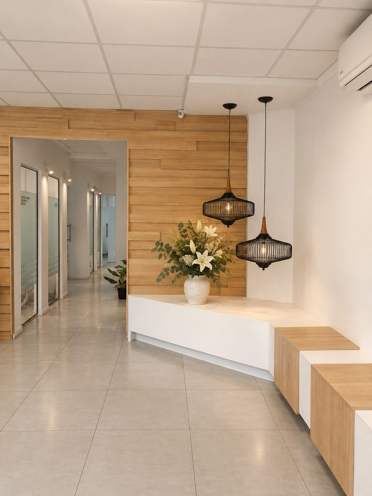
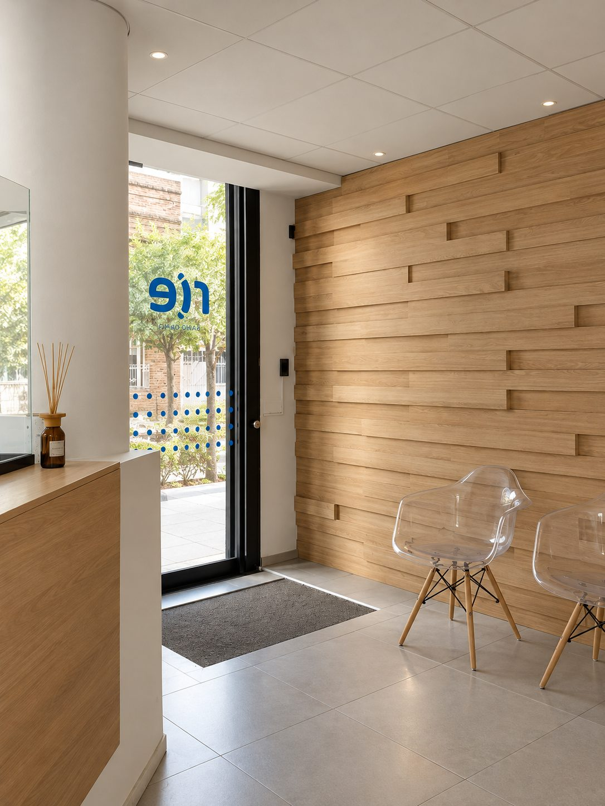
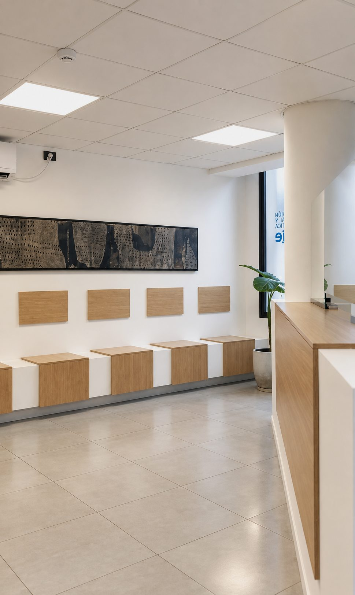

Arquitectura para salud
Consultorios RIE
Consultorios con recepción de madera y sala de espera minimalista
- Año
- 2018
- Lugar
- Barrio Centro, Villa María




Arquitectura para salud
Consultorios con recepción de madera y sala de espera minimalista



